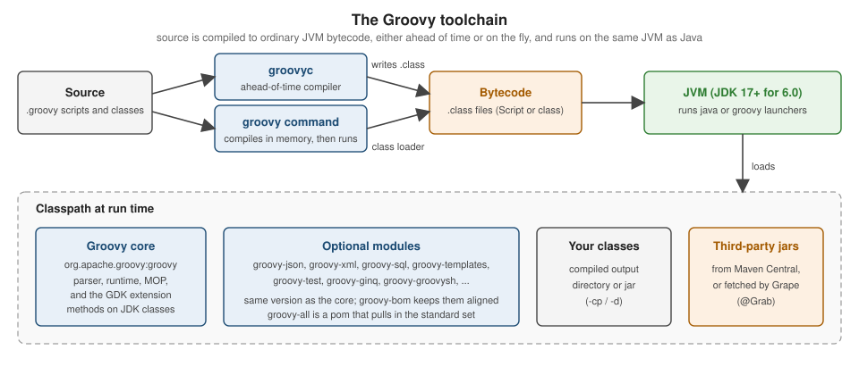

Getting Started
|
This content was generated with the assistance of AI and should be verified against the official documentation before being relied on in production. |
This page is written against Apache Groovy 6.0.0 (released 2026-09-22) and every example was run on that release with JDK 26 (Oracle) on macOS, checked on 2026-10-14. It gets a working Groovy onto your machine, explains how Groovy fits into a JVM project, and compiles and runs a first script and a first class so that the rest of the section has something concrete to refer to. The next pages cover the differences with Java and running scripts with the groovy command. The landing page, Groovy, places this page in the section.
What Groovy is used for
Groovy is an optionally typed, dynamic and statically compilable language for the JVM. It compiles to ordinary bytecode, calls any Java library directly, and adds closures, a large set of extension methods on JDK classes (the GDK) and strong support for domain-specific languages. Those properties make it a good fit for a handful of recurring jobs:
| Use | What it looks like in practice |
|---|---|
Scripting and automation |
single-file scripts started with the |
Build scripts |
Gradle build files are Groovy scripts (or Kotlin ones); see Build Tools: Gradle, Maven & Ant |
Testing |
Spock specifications, JUnit tests with power assertions, and Geb browser tests; see Testing with Spock & Geb |
Domain-specific languages |
command chains, closures with delegates and base-script classes let a program expose a small readable language; see Domain Specific Languages |
Data processing |
JSON, XML, YAML, CSV, SQL and in-memory queries with a few lines of code; see JSON and Databases with Groovy SQL |
Web and service applications |
Groovy classes inside Java applications, servlets and frameworks that embed or extend it, such as Grails and Micronaut; see Ecosystem |
Every example in this section uses one small scenario, a greenhouse toolkit that monitors and waters a hobby
greenhouse. This page only needs the smallest piece of it, a Plant.
Installing Groovy
Groovy is a plain JVM library plus a handful of launcher scripts, so installing it means putting a JDK on the machine and then one of the following. The official download page is https://groovy.apache.org/download.html and the installation instructions are on https://groovy-lang.org/install.html.
JDK requirements per release line
Check the JDK before the Groovy version, because the Groovy release line decides the lowest JDK it runs on.
| Groovy line | Minimum JDK | Notes |
|---|---|---|
6.0 |
17 |
The download page describes 6.0 as the next major version designed for JDK 17+; the install page says it supports up to Java 25, and the 6.0 release notes list JDK 17 to 27 as tested. This page ran on JDK 26. |
5.x |
11 |
5.1 is the latest stable line designed for JDK 11+; 5.0 is superseded by 5.1 but still released. |
4.0 |
8 |
Designed for JDK 8+ with much improved JPMS support. |
3.0 |
8 |
Designed for JDK 8+, with the newer, more flexible parser. |
Package managers
| Tool | Command | Platform |
|---|---|---|
SDKMAN! |
|
macOS, Linux, WSL2, Cygwin and other Bash platforms |
Homebrew |
|
macOS (and Linux) |
MacPorts |
|
macOS |
Scoop |
|
Windows |
Chocolatey |
|
Windows |
Snap |
|
Linux |
SDKMAN! is the usual choice for development, because it keeps several JDKs and Groovy versions side by side and
switches between them with sdk use and sdk default. Installing SDKMAN! itself and then Groovy takes four commands:
curl -s "https://get.sdkman.io" | bash
source "$HOME/.sdkman/bin/sdkman-init.sh"
sdk install groovy
groovy -versionThe output of the last command is shown below. SDKMAN! was not installed on the machine used for the examples, so the four commands above are reproduced from the official page and were not run here; the version line comes from the binary distribution described next.
Groovy Version: 6.0.0 JVM: 26 Vendor: Oracle Corporation OS: Mac OS XLinux distributions often package Groovy as well (apt, pacman and so on), but those packages can lag several
releases behind, so check groovy -version after installing.
The binary distribution and GROOVY_HOME
The distribution is a zip file. Download the binary release from the download page, unpack it into a folder, and point three environment variables at it. This is the only route that needs no package manager, and it is the one used to run the examples on this page.
-
Set
GROOVY_HOMEto the folder the zip was unpacked into. -
Add
GROOVY_HOME/bintoPATH, so thatgroovy,groovyc,groovyshandgroovyConsoleare found. -
Set
JAVA_HOMEto the JDK, unless the JDK is already onPATHand the launchers can find it.
export GROOVY_HOME="$HOME/tools/groovy-6.0.0"
export PATH="$GROOVY_HOME/bin:$PATH"
groovy -versionThe zip contains bin with the launchers, lib with the Groovy jars (the core jar and the modules) and their
dependencies, and documentation folders. The download page also offers a source zip (the authoritative artifact for a
release), a documentation zip and an SDK bundle that combines the three. Every release artifact comes with an
OpenPGP signature and a SHA-256 checksum, and it is worth verifying both for a manual download.
Source: Groovy documentation: install binary.
Docker and the Windows installer
Groovy is published on Docker Hub as the official groovy image, which is convenient for a throw-away script run
without installing anything. The download page points to that image (see Groovy on
Docker Hub); pick a tag that matches both the Groovy and the JDK you want, and note that the tags were not exercised
for this page. A typical call mounts the current folder and runs a script:
docker run --rm -v "$PWD":/work -w /work groovy:latest groovy hello.groovyThe command above is a sketch and was not run here. On Windows there is also a Windows installer. It is a community convenience artifact rather than an official ASF release, which is why it is linked separately on the download page. The Scoop and Chocolatey commands above are an alternative that keeps updates in the package manager.
Adding Groovy to a project
A project that embeds Groovy, or compiles Groovy sources, takes it as an ordinary dependency from Maven Central. Since
Groovy 4.0 the group ID is org.apache.groovy. The groovy artifact is the core (parser, runtime and the GDK), and
each optional module is a separate artifact named groovy-<module>, for example groovy-json, groovy-xml,
groovy-sql, groovy-templates, groovy-test or groovy-ginq.
// build.gradle (Gradle 6 or later), not run here
dependencies {
implementation platform('org.apache.groovy:groovy-bom:6.0.0')
implementation 'org.apache.groovy:groovy'
implementation 'org.apache.groovy:groovy-json'
}<!-- pom.xml, not run here -->
<dependencyManagement>
<dependencies>
<dependency>
<groupId>org.apache.groovy</groupId>
<artifactId>groovy-bom</artifactId>
<version>6.0.0</version>
<type>pom</type>
<scope>import</scope>
</dependency>
</dependencies>
</dependencyManagement>
<dependencies>
<dependency>
<groupId>org.apache.groovy</groupId>
<artifactId>groovy</artifactId>
</dependency>
<dependency>
<groupId>org.apache.groovy</groupId>
<artifactId>groovy-json</artifactId>
</dependency>
</dependencies>The groovy-bom is a bill of materials that fixes the version of every Groovy artifact in one place, so the core and
the modules never drift apart. The groovy-all artifact is a pom (not a jar) that refers to the core plus the
standard modules, which is handy for a quick start but pulls in more than most projects need. Both artifacts exist for
6.0.0 on Maven Central. The Maven and Gradle snippets above are the form documented for current releases and were not
built here; Build Tools: Gradle, Maven & Ant
covers compiling Groovy sources in a build, and
Integrating Groovy into Java
Applications covers using Groovy from Java code.
| Groovy versions | Coordinates |
|---|---|
4.0 and later |
|
1.x to 3.x |
|
The package names in the code did not change with the group ID, only the Maven coordinates did. With Gradle 6 or
later the bill of materials is applied with platform(...) as shown above; older Gradle versions used the
org.codehaus.groovy coordinates in the same position. The set of modules also grew over time. For example, the
download page records groovy-yaml as new in 3.0, and groovy-contracts, groovy-typecheckers and
groovy-macro-library as new optional modules in 4.0, so check the module list on the download page for the release
you target rather than assuming a module exists in every line.
The following script uses a module from the distribution’s lib folder. The call on the last line shows that the
class comes from a separate jar, which is the same jar a project gets from the groovy-json dependency above:
import groovy.json.JsonOutput
// groovy-json ships in the distribution, so the script needs no @Grab
def plant = [name: 'tomato', wateringIntervalHours: 12]
println JsonOutput.toJson(plant)
// the same module is a separate artifact when Groovy is a project dependency
println JsonOutput.class.protectionDomain.codeSource.location.path.tokenize('/').last()Saved as modules.groovy and run with groovy modules.groovy, it prints:
{"name":"tomato","wateringIntervalHours":12}
groovy-json-6.0.0.jarThe first script
A Groovy script is a file of statements. There is no class declaration and no main method, and the file is turned
into a class that extends groovy.lang.Script when it is compiled. Save the following as hello.groovy:
// hello.groovy: a script needs no class and no main method
def plants = ['tomato', 'basil', 'chilli']
println "The greenhouse grows ${plants.size()} plants: ${plants.join(', ')}"
println "Running Groovy ${GroovySystem.version} on Java ${System.getProperty('java.specification.version')}"Run it with groovy hello.groovy:
The greenhouse grows 3 plants: tomato, basil, chilli
Running Groovy 6.0.0 on Java 26Three things happen on that command line. The groovy launcher starts a JVM with the Groovy jars on the classpath,
compiles the script in memory, and runs the resulting class. Nothing is left on disk afterwards. println is a GDK
method added to every object, the double-quoted string interpolates ${...} expressions (a GString), and the list
literal [...] creates a java.util.List. The Groovy command, its options and the way it treats arguments and exit
codes are covered in
Running Scripts & the groovy Command.
To check which Groovy you have, groovy -version prints the Groovy version, the JVM, the vendor and the operating
system:
Groovy Version: 6.0.0 JVM: 26 Vendor: Oracle Corporation OS: Mac OS XFor a one-liner there is also groovy -e, which takes the program text as an argument:
groovy -e 'println "Hello from -e"'Hello from -eThe interactive tools are groovysh, a command-line shell, and groovyConsole, a small Swing window; both are
described in groovysh & groovyconsole.
Source: Groovy documentation: install binary.
The first class
A script is convenient, but real code is organised into classes. A Groovy source file can also declare ordinary
classes, with properties instead of hand-written getters and setters, a named-argument constructor, and AST
transformations such as @ToString that generate code at compile time. Save the following as
src/greenhouse/Plant.groovy:
package greenhouse
import groovy.transform.ToString
@ToString(includeNames = true)
class Plant {
String name
int wateringIntervalHours = 24
String describe() {
"${name} needs water every ${wateringIntervalHours} h"
}
static void main(String[] args) {
def tomato = new Plant(name: 'tomato', wateringIntervalHours: 12)
println tomato.describe()
println tomato
}
}Source: Groovy documentation: Normal class, Groovy documentation: Properties, Groovy documentation: @ToString
Groovy classes are public by default, the last expression of a method is its return value, and the name and
wateringIntervalHours declarations are properties: each generates a private field plus a public getter and setter.
The detail behind these rules is in
Classes, Fields & Properties.
Compiling with groovyc and running with java
groovyc is the ahead-of-time compiler. Like javac, it takes source files and writes .class files, and -d names
the output folder:
groovyc -d out src/greenhouse/Plant.groovy
find out -type fout/greenhouse/Plant.classThe result is an ordinary class file, so the plain java launcher runs it, as long as the Groovy core jar is on the
classpath. That jar is the only extra requirement here, because the class uses nothing beyond the core and the
@ToString annotation, whose code is generated at compile time:
java -cp out:$GROOVY_HOME/lib/groovy-6.0.0.jar greenhouse.Planttomato needs water every 12 h
greenhouse.Plant(name:tomato, wateringIntervalHours:12)On Windows the classpath separator is ; rather than :. The groovy command can run the same compiled class and
also reaches it from a script; -cp adds the output folder, and since Groovy 6.0 the current directory is no longer
part of the classpath implicitly:
groovy -cp out -e 'println new greenhouse.Plant(name: "basil").describe()'basil needs water every 24 hA script can be compiled the same way. groovyc -d out2 hello.groovy produces hello.class, a class whose main
method runs the script body, and java -cp out2:$GROOVY_HOME/lib/groovy-6.0.0.jar hello prints the same two lines as
before. Inspecting the compiled Plant class with javap shows what Groovy added to the Java-visible shape: the class
implements groovy.lang.GroovyObject, and the name and wateringIntervalHours properties show up as the usual
getName() and setName(String), getWateringIntervalHours() and setWateringIntervalHours(int) accessors, plus a
generated toString() and the main method. Because the output is standard bytecode, a Java class can call
greenhouse.Plant like any other class, as Compiling
with groovyc & Joint Compilation shows when Groovy and Java sources are mixed in one project.
How the pieces fit together
The figure below summarises what the commands above do. Source goes through either groovyc, which writes
.class files, or the groovy command, which compiles in memory and runs immediately. Both produce bytecode, and the
JVM runs it with the Groovy core, the optional modules, your own classes and any third-party jars on the classpath.
There is no separate Groovy virtual machine: a Groovy program is a JVM program, which is why Groovy and Java classes
can call each other freely.

IDE support
For a list of IDEs and editors with links to their official pages, see IDEs & Tools.
The official IDE integration page lists the editors and the features they provide. For Groovy the useful ones are:
-
IntelliJ IDEA with syntax highlighting, code completion and refactoring for Groovy.
-
Eclipse through the Groovy Eclipse plugin (Groovy Development Tools), with the same three features.
-
Apache NetBeans with the same three features.
-
VS Code through Groovy extensions, with syntax highlighting and refactoring support but, according to the table, no completion.
-
Emacs, TextMate, vim, UltraEdit, SlickEdit and EditRocket are listed with syntax highlighting only.
The table reflects what the Groovy project publishes and it is not a benchmark of the plugins, so try the plugin for your IDE with a small project before committing to it. Static type checking (Static Type Checking & @CompileStatic) improves code completion in most IDEs, because the editor then knows the types, whereas completion on dynamically typed code is necessarily a best guess.
The version scheme
Since Groovy 2.0.0 the project follows semantic versioning: after 2.0.0 comes 2.1.0, the first bugfix release after 2.0 is 2.0.1, and the next major version is 3.0.0. Before 2.0.0 a version was written X.Y.Z, where X.Y counted as the major version and Z as the minor one, and only Y was incremented for a new major version, so 1.5, 1.6, 1.7 and 1.8 were all major releases of the 1.x family. Groovy 1.0 appeared in January 2007, and the 1.9 line that followed 1.8 was renamed 2.0.
The practical consequences are these:
-
On the current scheme, a bugfix release (6.0.1 after 6.0.0) is safe to take, a minor release (5.1 after 5.0) adds features, and a major release (6.0 after 5.x) is allowed to break compatibility. Read the release notes before moving to a new major version.
-
The project keeps one official major version and puts the previous one in maintenance. When a new major version appears, the former official one moves to maintenance, receives one or two more bugfix releases, and is then usually discontinued. In practice lines survive for years, as the download page shows: on 2026-10-14 it lists 6.0.0, 5.1.3, 5.0.8, 4.0.33 and 3.0.25.
-
A module artifact always has the same version as the core, which is why the
groovy-bomis useful. -
Some features are labelled incubating in the release notes. They are available but their API may still change between minor releases, so avoid depending on them in code that must stay stable. When a later page mentions a feature introduced after Groovy 4.0 it names the release that added it.
Where the book is outdated
The reference book for this section, Groovy in Action, first edition, was written for Groovy 1.0 (January 2007) and the JDK of that time. For installation and tooling its advice is out of date in these ways:
-
It predates
groovy-bomand the split into optional modules. In its time Groovy came as a singlegroovy-alljar and the Maven group ID wasorg.codehaus.groovy(the project later moved to Apache and, from 4.0, toorg.apache.groovy). Todaygroovy-allis a pom, not a jar. -
It targets JDK 1.4 and 5. Groovy 6.0 needs JDK 17 or later, 5.x needs 11, and 4.0 and 3.0 need 8.
-
Its installation steps are the zip and environment variables. They still work, but SDKMAN!, Homebrew and the other package managers above are now the usual route.
-
Its tooling coverage names plugins and IDE support that have since changed; use the table on the official IDE page instead.
-
Its version numbers follow the pre-2.0 scheme described above.
The language concepts it introduces (scripts versus classes, properties, closures, the dynamic nature of the runtime) are still valid. The Manning page for the book is linked below, together with the official documentation used for this page.